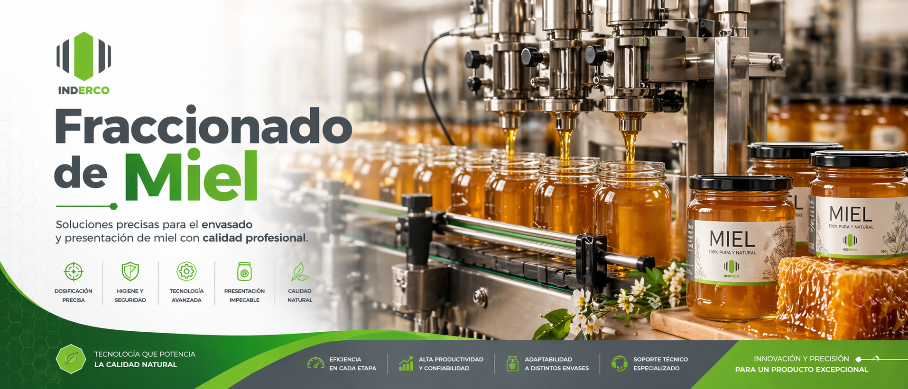

IND
ERCO
☰
La Empresa
Productos
Extracción de miel
Fraccionado de miel
Homogeneizado de miel
Accesorios
Industria 4.0
Contacto Comercial
Presupuesto

Nuestros Productos de Fraccionado
×
Contactar por WhatsApp